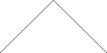
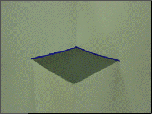
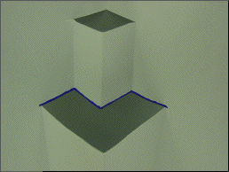
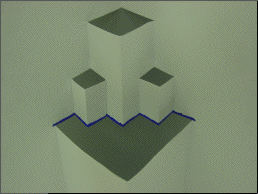
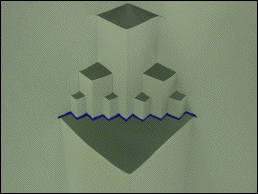
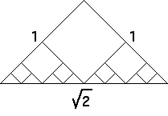

Here are schematics (left) and photos (right) of the first four steps in forming a back fold.
|  |  |
|  | |
|  | |
|  |
By superimposing the schematics, it is easy to see that in the limit the back folds converge to the line of length sqrt(2).
|  |
This is clear, but on closer inspection leads to an observation that may seem paradoxical:
| step | number of segments | length/segment | back fold length |
| 1 | 2 | 1 | 2 |
| 2 | 4 | 1/2 | 2 |
| 3 | 8 | 1/4 | 2 |
| 4 | 16 | 1/8 | 2 |
| n | 2n | 1/2n-1 | 2 |
We have a sequence of broken lines, each having length 2, converging to a line of length sqrt(2). What does this suggest to you?
Return to Length of the Cuts.